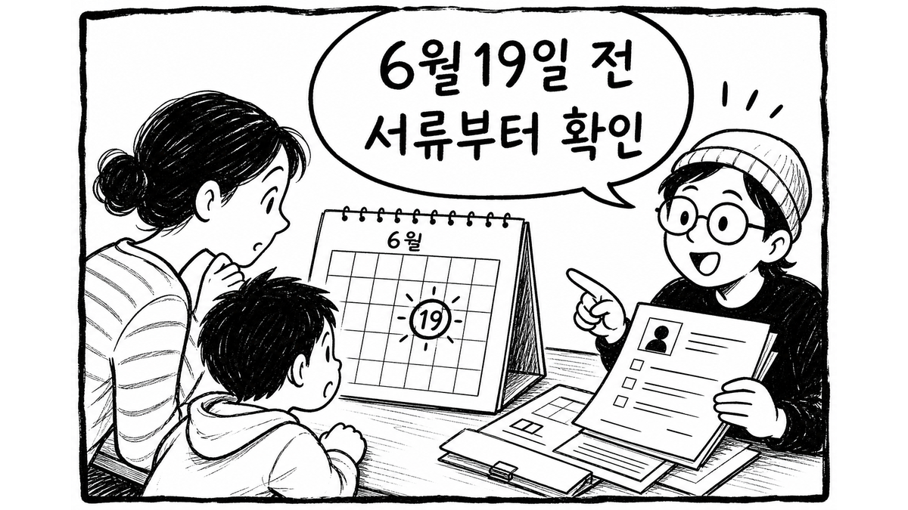
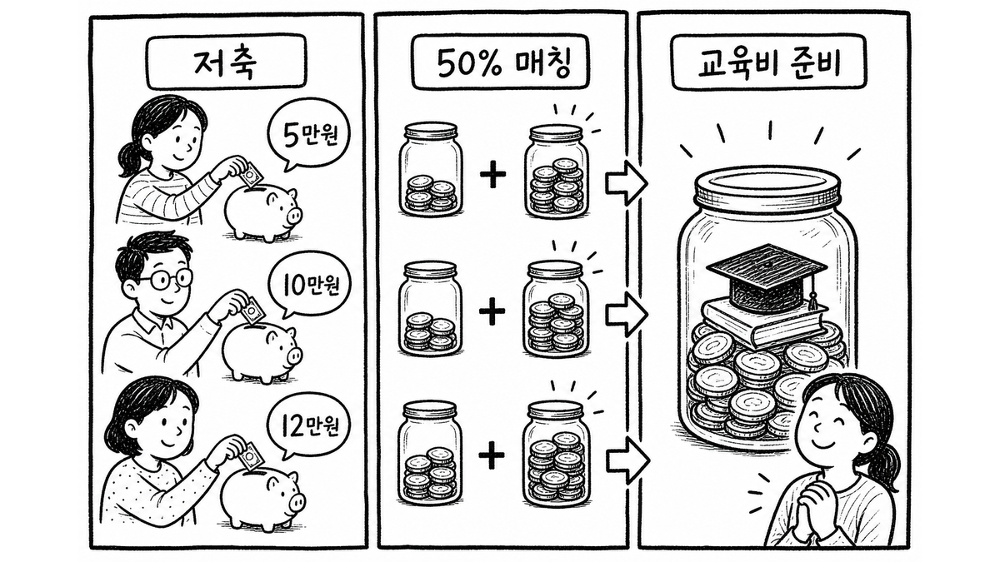
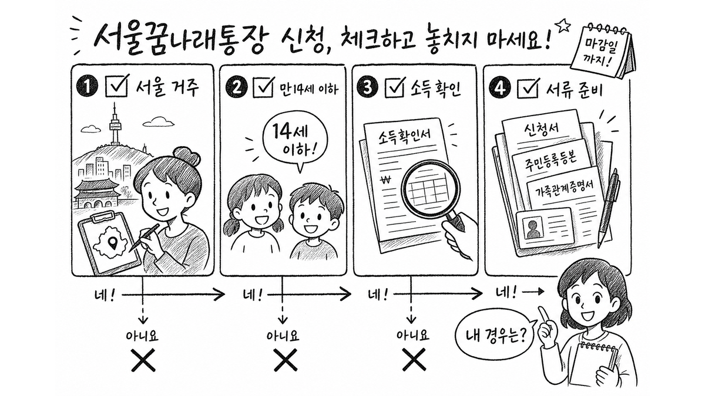

서울에 살고, 만 14세 이하 자녀 교육비를 준비하고 있다면 이번 글은 먼저 한 번만 걸러보시면 됩니다.
2026년 서울 꿈나래통장 신규 모집은 6월 19일 금요일 18시에 접수가 끝납니다. 공식 공고에는 신청기간 외 접수가 안 된다고 되어 있고, 서류가 빠지거나 식별이 어려우면 보충 없이 제외될 수 있다는 문구도 있습니다.

5초 판정
조건을 대충 맞는 것 같다고 생각해도, 실제 접수에서는 서류가 더 먼저 걸림돌이 됩니다.
서울시복지재단 공고에는 신청기간 외 접수 불가, 서류 미비·누락·식별 불가 시 별도 보충 요청 없이 제외될 수 있음이라는 취지의 안내가 있습니다. 이 부분은 그냥 주의사항이 아니라, 신청 전 체크 순서를 바꾸는 문장입니다.
그래서 순서는 이렇게 잡는 게 안전합니다.
꿈나래통장은 자녀 교육비 준비를 위한 서울시 자산형성지원사업입니다. 공식 사업 설명 기준으로 월 저축액을 선택하고, 일정 조건을 지키면 저축액의 일부를 매칭받는 구조입니다.

쉽게 말하면
다만 이 글만 보고 “무조건 받을 수 있다”고 판단하면 안 됩니다. 소득 기준, 거주 요건, 제외 사유, 약정 조건은 공식 공고문에서 최종 확인해야 합니다.
비슷한 시기에 서울시 자산형성지원사업 공고가 같이 보이면 이름이 헷갈립니다.
희망두배 청년통장은 일하는 청년 본인의 자산형성 쪽이고, 꿈나래통장은 만 14세 이하 자녀의 교육비 준비 쪽으로 보면 됩니다. 대상 독자가 다르기 때문에 신청 화면과 공고문도 따로 봐야 합니다.

주의
이 글은 신청 대행이나 선정 보장을 말하는 글이 아닙니다. 접수 기간, 인원, 서류 기준은 공식 공고가 우선입니다. 특히 마감 직전에는 접속 지연이나 파일 누락이 생길 수 있으니 하루 전에 한 번 더 점검하는 편이 안전합니다.
지금 할 일은 간단합니다. 공식 공고문에서 대상과 서류를 먼저 확인하고, 6월 19일 18시 전에 온라인 신청 가능 여부를 정리해두는 것입니다.